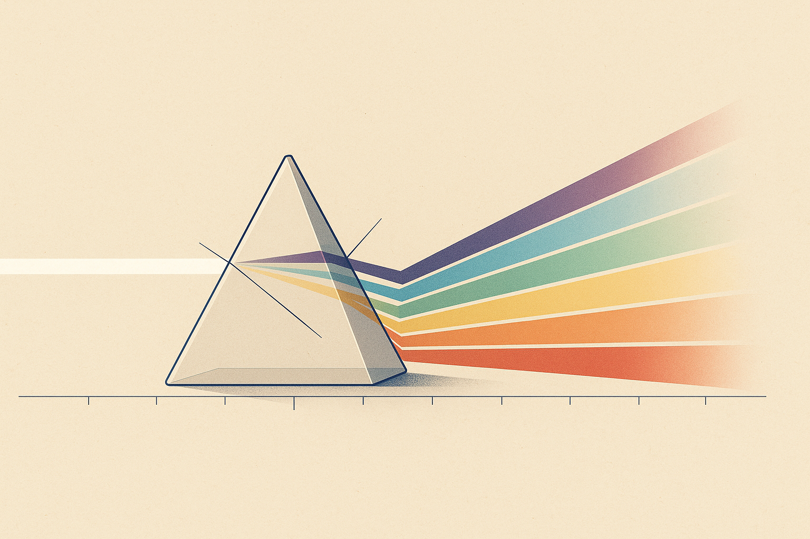
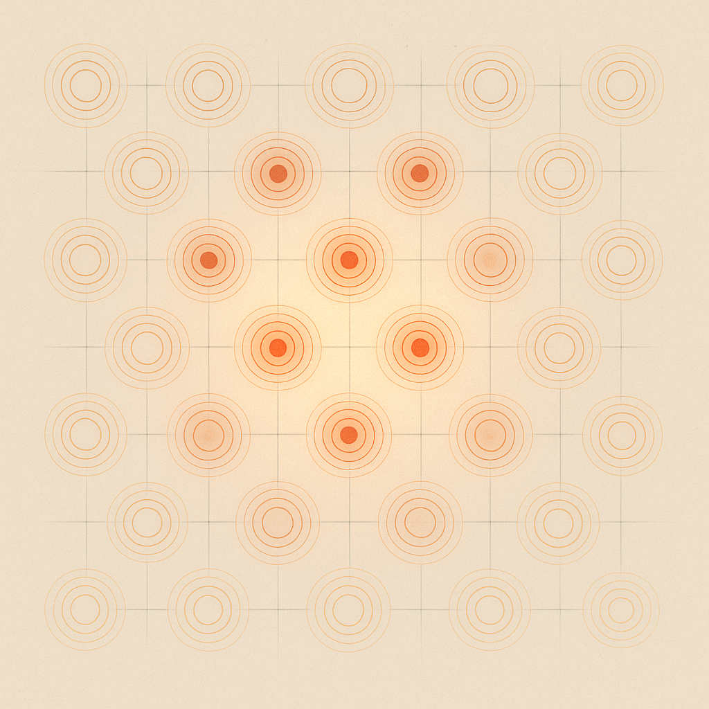
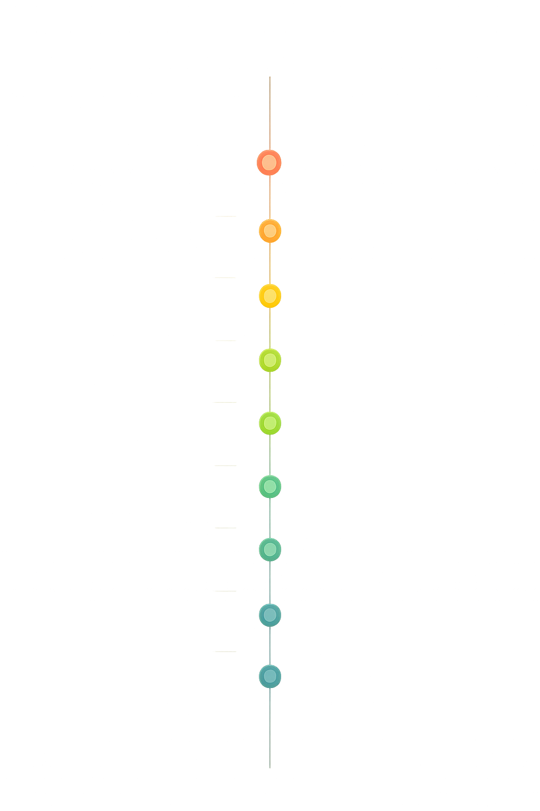

Review below. Reply approve to publish the Facebook post, or tell me edits.

If a product page says "powerful red light" and no number follows, that is not confidence. That is a blank.
We are not going to tell you to buy anything here. We are going to hand you the checklist we would use to judge any LED mask, including our own. Two questions send most people down a rabbit hole: do LED face masks actually work, and how do you choose an LED face mask without overpaying for the box art. You cannot answer either from adjectives. You answer them from the spec sheet, so we would rather teach you to read one than out-shout the category. Redermis makes a single product, a face-and-neck LED mask, so the spec sheet is the whole conversation for us anyway.
Here are the five things worth looking for, and the vague words that tend to appear when they are missing.
Light only helps the skin it actually reaches. So the honest question is not "how bright" but "how much skin gets covered, and how evenly". The proxies for that are emission points and chip count. An emission point is a single spot of light. More of them, spread across a shaped surface, means fewer gaps and less of the mask sitting dark against your skin.
Ours, as a worked example: 70 RGB chips on the face piece and 33 on the neck piece, for 309 emission points across a two-part design that treats face and neck together. We share those figures not to impress you but because they are the sort of number a page should show. A single small panel held to one cheek, or a handful of bulbs in a rigid frame, is a genuinely different thing to a full contoured mask, and the coverage number is where that difference becomes visible. If a page skips it entirely, ask yourself why.
Boxes love to advertise seven colours, or ten, as if each one were a separate engine of skincare. Usually it is one clever trick repeated.
Most masks use RGB chips: red, green and blue primaries that mix to produce the rest. In our case, red sits at 630nm, green at 520nm, blue at 460nm. Yellow, purple, cyan and white are combinations of those three, the same RGB logic your screen uses to build every colour it shows you. This matters for one reason. More colours on the box is not more power. It is more mixing. A device offering a long rainbow of modes is not automatically doing more for your skin than one with fewer, well-chosen wavelengths. Know the difference, and you stop paying for the length of the list.
Numbers, not adjectives. A credible page tells you the wavelength in nanometres, because a wavelength is a physical measurement and "clinical red" is a mood. Red at around 630nm behaves differently to red at 660nm, and "warm glow" tells you nothing you can compare.
Here is the honest hedge that should sit alongside those numbers. At-home devices are gentler and lower-powered than the equipment in a clinic. The effect, where there is one, is cumulative over weeks of consistent use, not instant and not dramatic on day one. A page that states this is not admitting a weakness. It is telling you the truth about the category, and that honesty is itself a green flag. Anything that implies clinic-grade results from a soft flexible mask has quietly swapped the numbers for a promise.
This is the small print that decides whether a device fits your actual life. Check the battery, the charging method, and the runtime, then check that the runtime matches the daily protocol the same page recommends.
Ours, as a worked example: a 5V 1200mAh internal battery, USB-C charging, roughly 4 to 5 hours for a full charge, designed around sessions of about 10 minutes a day. The logic to apply is a sceptic's arithmetic. If a page tells you to use the mask for twenty minutes daily but the battery barely lasts one session, or if it never states runtime at all, the protocol and the hardware do not agree. Consistency is the whole game with LED, so a device you can charge simply and use in a short, repeatable window is worth more than a longer feature list.
You can read most of a spec sheet by its adjectives. Here is a short literacy list.
Red flags: "medical-grade" used as a benefit rather than a manufacturing standard. To be clear, medical-grade is legitimate as a material or build spec, the way it describes the medical-grade silicone that sits against your skin, but it says nothing about how well a device works and should never stand in for a result. "Erases", "instant", "overnight". Any language that drifts toward cure, treat or heal. No wavelength stated in nanometres. No coverage or emission figure anywhere on the page.
Green flags: plain numbers you can compare. Stated limits and realistic timelines. An honest line that the device is cosmetic, not medical. A brand willing to tell you what it will not do.
None of this requires a science degree. It only requires noticing when a number should be there and is not.
Here is the honest part we owe you. Redermis is new. We do not have a wall of reviews, and we are not going to invent any. That means we cannot lean on a crowd to vouch for us, which is exactly why we would rather you held us to numbers than to noise.
A few plain facts for the local reader: we are an Australian brand, our prices are in Australian dollars, and your full rights under Australian Consumer Law apply to anything you buy from us, so a purchase is never a leap of faith with no recourse.
So run the checklist above against us the same way you would against anyone else. Look for the wavelengths in nanometres, the coverage figures, the charge and runtime, and the limits we are willing to name. Then decide. A spec sheet you can read is the only kind worth trusting.
One question for you, and we mean it: which number does a product page most often leave out when you go looking? Tell us in the comments, and if this checklist would save a friend a bad purchase, send it their way.
If you want to run this checklist against our full spec, the mask is the full spec.

"Powerful red light" is not a number.
When a product page says it and never gives you a figure, that word is doing the work a number should. Here is a quick checklist you can run against any LED mask, ours included:
1. Coverage: how much skin actually gets light? Look for emission-point and chip counts (ours: 70 face + 33 neck RGB chips, 309 emission points).
2. Colours are mixing, not muscle: 7 colours come from red, green and blue primaries at 630/520/460nm, the same RGB logic your screen uses.
3. Wavelengths in nanometres, not adjectives: "clinical red" is not a number.
4. Charge and runtime that suit the routine: ours is a 1200mAh USB-C battery, 4 to 5 hr charge, built around about 10 minutes a day.
5. The words that should make you pause: "medical-grade", "erases", "instant" with nothing behind them.
One honest line: at-home LED is gentler than in-clinic and works gradually, and a brand telling you that is a good sign.
We are Redermis, a new AU brand with one product and no wall of reviews. Priced in AUD, your Australian Consumer Law rights apply, so we would rather you judged us by the numbers than by noise.
What is the vaguest claim you have seen on a skincare device? Drop it below. And tag someone who is comparing LED masks right now.
#LEDmask #LEDFaceMask #redlighttherapy #skincaretips #skinlongevity #skincareaustralia

"Powerful red light" is not a number.
Five things a spec sheet should tell you, and most won't:
1. Coverage.
Emission points + chip count = how much skin actually gets light. (Ours: 70 face + 33 neck chips, 309 points.)
2. Colours are mixing, not muscle.
7 shades built from red, green and blue primaries. 630 / 520 / 460nm. Same RGB logic as your screen.
3. Wavelengths in nm, not adjectives.
"Deep red" tells you nothing. A number does.
4. Charge that fits the ritual.
1200mAh, USB-C, 4 to 5 hours, about 10 minutes a day. If you cannot see the runtime, ask why.
5. The words to pause on.
"Medical-grade." "Erases." "Instant." Vague words often stand in for weak numbers.
Honest bit: at-home light is gentler than a clinic and tends to work over weeks, not overnight. A brand that says so out loud is a green flag.
Redermis: one product, a new AU brand, no fake reviews. Judge us by the numbers.
Save this before you compare LED masks. What is the vaguest claim you have seen on a skincare device? Drop it below.
Full spec is in our bio if you want a closer look.
#ledmask #LEDFaceMask #redlighttherapy #lighttherapy #skincaresceptic #skinlongevity #athomeskincare #australianskincare
**Title:** How to choose an LED face mask: the spec-sheet numbers that actually matter
**Description:**
Save this pin before your next LED mask purchase.
Wondering if an LED face mask is worth it? Numbers over adjectives, every time. Most LED mask pages want you to read the adjectives. Read the numbers instead.
How to choose one, five numbers deep:
309 emission points across face and neck (70 face + 33 neck RGB chips). A real coverage number. Most pages skip it.
630 / 520 / 460nm red, green and blue primaries. The 7 colours are those three mixed, not seven separate engines.
Wavelengths in nanometres, not adjectives. "Clinical red" is a mood, not a measurement.
5V 1200mAh battery, USB-C, 4 to 5 hr charge, about 10 minutes a day. Does the runtime match the routine it recommends?
Red flag: vague words like "instant" or "medical-grade" usually mean the numbers underneath are weak.
If you want a closer look at the full spec, it is here: https://redermis.com.au/mask
**Hashtags:** #LEDFaceMask #RedLightTherapy #SkincareTips #AtHomeSkincare #SkinLongevity